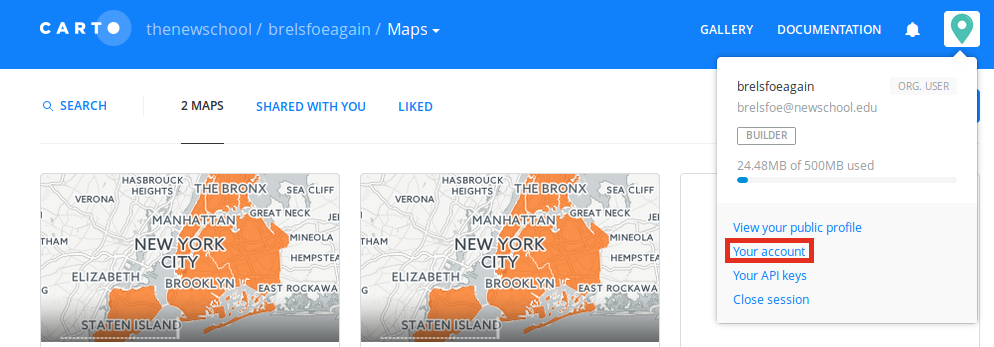
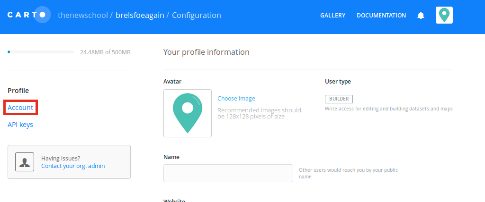

Assignment 6
Resources
- The QGIS documentation for the georeferencer plugin.
Georectifying with QGIS:
Part 1: Georeferencing with QGIS
Georeference an image of a map. If you don't have one in mind, use an urban renewal plan from Urban Reviewer that has an image associated with it (eg, Two Bridges) or look at the NYPL's digital collections, filtered to maps.
Georeference the image using QGIS. The result may not be absolutely perfect, but do get major landmarks to line up and most of the streets in line. Keep in mind that aerial imagery is often taken at an angle, so avoid using rooftops as control points.
Submit a screenshot of the georeferenced image, semi-transparent, over a base layer of your choosing.
Part 2: Creating Data with QGIS
Using the georeferenced image from Part 1, create a new shapefile and trace some elements of the georeferenced image. Optionally overlay other data with your new shapefile. Use Print Composer to create a PDF of the resulting map and submit this map.
Part 3: CARTO
Next week we will start looking at CARTO. CARTO (formerly CartoDB) has likely changed significantly since you last used it, and The New School now has an agreement with the company that lets us give more space to students as needed. To take advantage of this, please create a new login with your New School email address using this link. If you already have a CARTO/CartoDB account with your New School email address and the above link does not work as a result, please login to your existing account and change the email address associated with it, then try signing up again.
Once you have created an account, go to your account settings,

click Account:

then turn on Builder:
You don't have to do anything else with CARTO for now, we will start talking about it next week.
Submitting Your Work
You're expected to submit three items for this assignment:
- A screenshot from Part 1.
- A PDF created in Print Composer from Part 2.
- A screenshot of your profile in CARTO showing that you have enabled Builder.
Optionally submit a short summary of the work you did and issues you ran into.